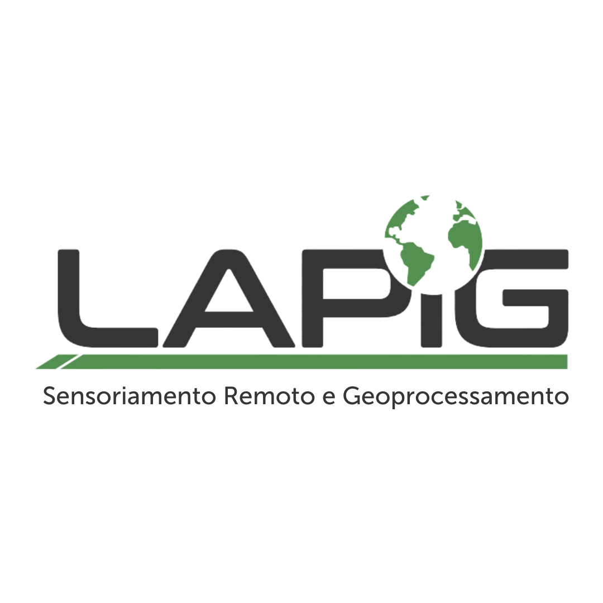
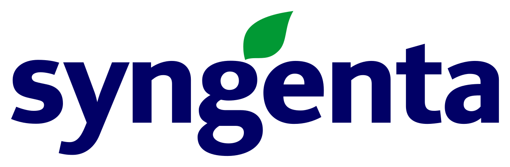

Monitoramento de Carbono - Iniciativa REVERTE®
Bem-vindo à documentação oficial do projeto de Monitoramento de Carbono, uma colaboração estratégica entre a The Nature Conservancy (TNC), Syngenta e o Laboratório de Sensoriamento Remoto e Geoprocessamento da Universidade Federal de Goiás (LAPIG/UFG).
🎯 Objetivo do Projeto
O programa REVERTE® busca apoiar produtores rurais na recuperação de áreas degradadas no Cerrado, promovendo a transição para sistemas de cultivo agrícola mais produtivos e sustentáveis. Este repositório documenta os protocolos científicos e técnicos utilizados para estimar o sequestro de carbono orgânico no solo e os impactos ambientais dessas práticas.
Saiba mais sobre a Iniciativa REVERTE®
🗺️ Guia de Navegação
Explore as seções da documentação para entender o fluxo completo do projeto:
📖 Contexto
Entenda o panorama da pecuária no Brasil, os desafios do monitoramento de solo e o papel fundamental do programa REVERTE® na mitigação climática.
🔬 Referências Conceituais
Base científica sobre o Modelo Century, processos de calibração para o bioma Cerrado e as variáveis meteorológicas e edáficas consideradas.
📋 Requisitos para Modelagem
Detalhamento de como os dados são processados, desde imagens Sentinel-2 via Google Earth Engine até o plano amostral de campo realizado em 2025.
💻 Processos (Scripts)
Acompanhamento técnico dos códigos de automação desenvolvidos em R (espacialização), Google Earth Engine (extração de dados) e Python (validação). Todos os scripts estão disponíveis e linkados em sua respectiva página de documentação.
🤝 Instituições Parceiras
| Logotipo | Instituição |
|---|---|
 |
Laboratório de Sensoriamento Remoto e Geoprocessamento (LAPIG/UFG) |
 |
The Nature Conservancy (TNC) |
 |
Syngenta |
Dúvidas ou sugestões sobre a documentação? Entre em contato com a equipe técnica do LAPIG/UFG.